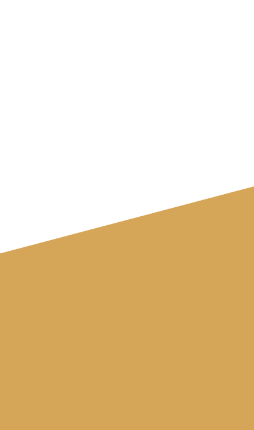
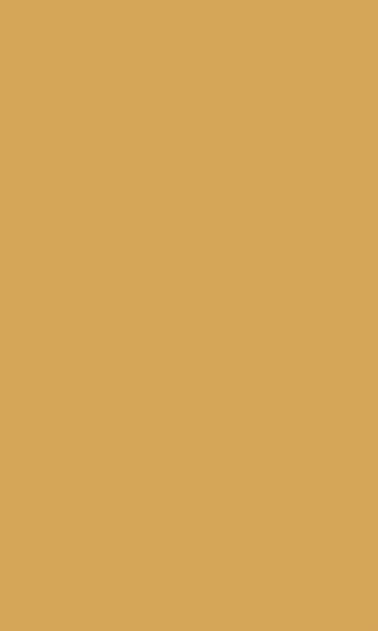
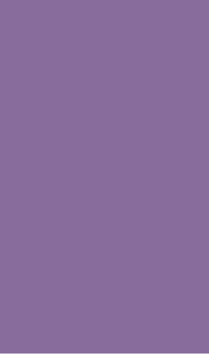
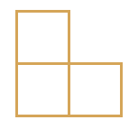
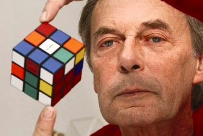
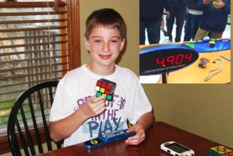
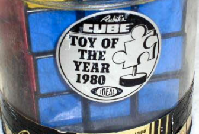
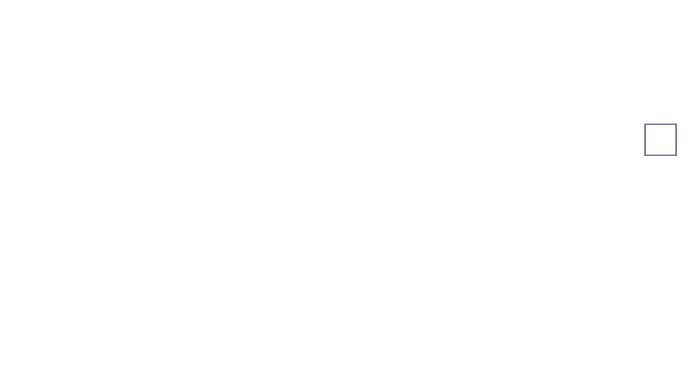
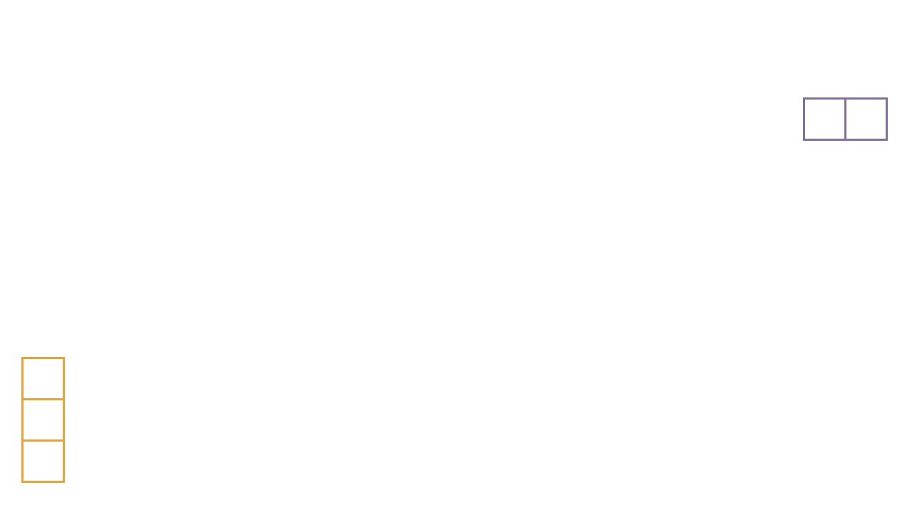

КУБИК РУБИКА
самая знаменитая головоломка мира

ЧТО ТАКОЕ КУБИК РУБИКА?

Кубик Рубика — это головоломка.
Классический кубик представляет собой куб 3×3×3.
Он состоит из 54 граней малых кубиков, составляющих один большой куб.

ЭРНО РУБИК

Головоломка изобретена в 1974 году венгерским скульптором Эрно Рубиком.
Он работал в академии искусства, и чтобы развивать у студентов пространственное воображение, он создал наглядное учебного пособие.




СОРЕВНОВАНИЯ И РЕКОРДЫ
ФАКТЫ
ШРИФТ RUBIK
2018 год — 4,59 секунды, Феликс Земдегс повторил мировой рекорд.
Новый мировой рекорд установил китайский спидкубер, Du Yusheng собрал кубик MoYu WeiLong GTS v2 Magnetic за сумасшедшие 3.47 секунды.
В настоящее время собрать кубик предлагает большинство игровых сервисов всемирной электронной паутины.
Игрушка оказалась очень популярной: за все время продано около 350 миллионов кубиков Рубика. Каждый шестой человек в мире уже нашел алгоритм для решения этой задачи.
Гротесковый шрифт Rubik создали дизайнеры Филипп Губерт и Себастьян Фишер специально для Chrome Cube Lab, проекта Google.
По замыслу дизайнеров, каждая буква должна идеально вписываться в одно окошко кубика Рубика, если это
когда-нибудь понадобится. Rubik отличается одновременно
и стройной строгостью за счет контрастности,
и деликатностью благодаря скругленным плавным формам.

3
×
3
×
3
Егорова Алина-Виктория